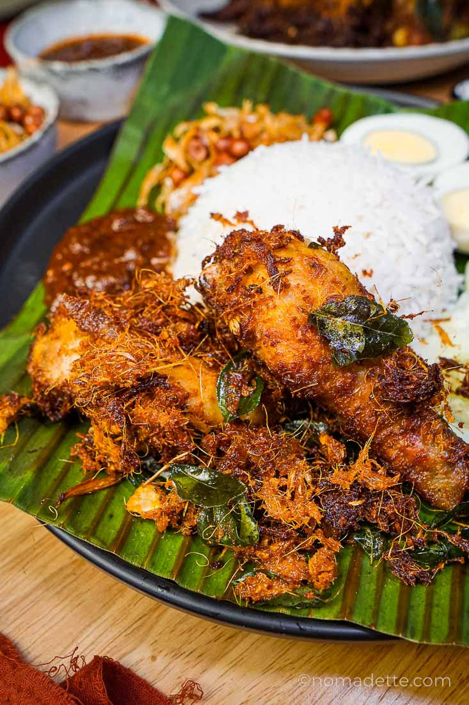

Ayam Goreng Berempah

Ramuan
20 minit
6 - 7 orang
- 1/2 ekor ayam - potong kecil
- 6 ulas bawang putih - kisar
- 2 inci halia - kisar
- 3 btg serai - kisar
- 5 bj cili padi - kisar
- 1 sudu teh serbuk kunyit
- 1 sudu teh ketumbar - kisar
- 1 sudu teh jintan manis - kisar
- 1 sudu teh jintan putih - kisar
- 1 sudu besar serbuk kari ayam/daging
- 1 sudu teh serbuk cili (jika nak lebih pedas)
- 1 biji telur
- 5 sudu tepung bestari
- 2 tangkai daun kari
- sesedap rasa
- Minyak untuk menggoreng
Home